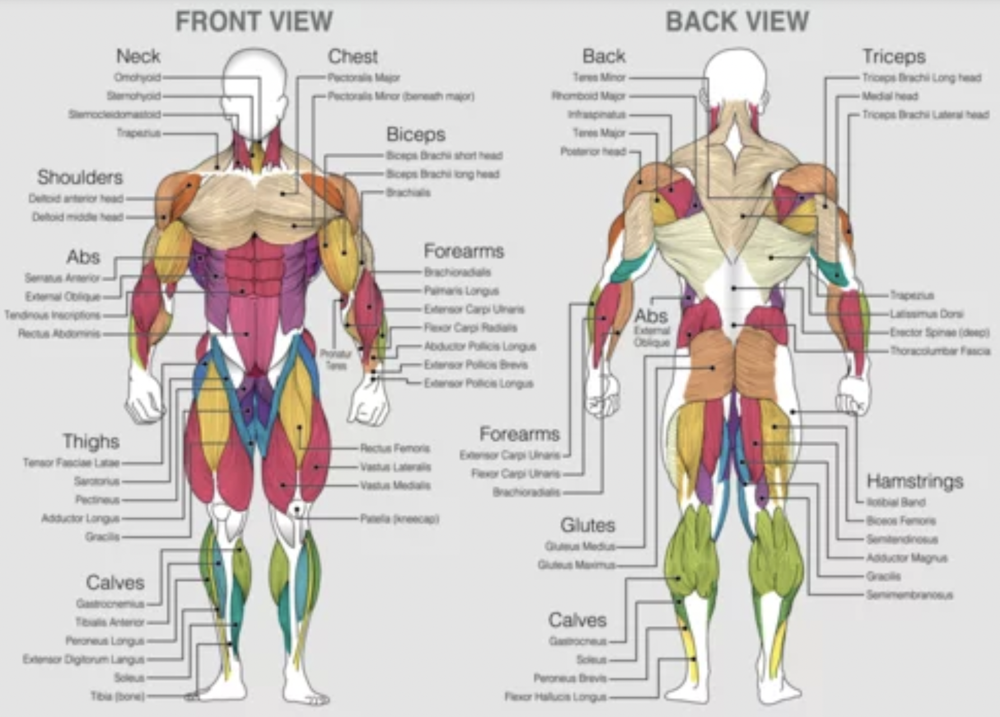

Have you ever wanted to start your fitness journey but didn't know where
to start?
Human Anatomy-Muscular System

Its Importance
The muscular system is essential for human movement, providing the ability
to perform daily activities and engage in physical exercise. Comprising
skeletal muscles, it supports posture, facilitates locomotion, and enables
intricate movements. Beyond physical function, a healthy muscular system
contributes to overall metabolic health and enhances the body's functional
capacity.
Testimonials
Name: Mark Heidebrect
"Terry and I decided to try and stay productive over the summer and
challenged each other to doing 300 push-ups and 100 pull-ups every
other day along with at least 5k steps a day. Over the course of
summer, I've noticed myself becoming more disciplined and athletic."
Name: Jack Gallanger
"When my friend Terry began his fitness journey, I reminded him to
consistently do pull-ups even though beginners most often struggle
with them. Pull-ups are my favorite upper body exercise because they
work a lot of different muscle groups and help you to develop a lot of
functional strength"
About Me:
My name is Terry and I'm currently a 19 year old sophomore attending
Syracuse University. I recently began my fitness journey and have been
exercising for around a year. I genuinely mean it when I say that it
turned my life around and helped me in so many different ways. Once I
began working out, I noticed that the benefits were mostly not physical.
Although this may sound counter-intuitive, I noticed myself generally
being in a better mood and becoming much more disciplined and mentally
stronger to face all the problems in my life. Most importantly, I
noticed myself becoming a better person physically and in general. After
every workout, I feel accomplished and the momentum to have an even more
productive day. With all this being said, the reason why I made this
website is to encourage everyone to begin their fitness journey which I
believe is a big step for becoming the best version of ourselves. In the
beginning, I didn't know where to start or whether I would have the time
to exercise but I found out that a gym is not neccessary and simple
calisthenics during your free time at home gets the job done. I wish I
started much earlier than I did and so I hope to motivate people because
the absolute best time to start something positive was years ago but the
second best time is now.